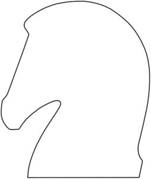

Trade Mark Journal No.2026/011 13 March 2026
WO0000001903774 (14,16,18,24,26)
Office of origin: France
Date of International Registration:25 September 2025
Date of designation in the UK:
25 September 2025

International priority date claimed: 27 March 2025
(France)
(5133427)
- Class 14
- Precious metals and their alloys; precious stones; jewelry ("joaillerie"); jewelry; costume jewelry; personal ornament jewelry; necklaces (jewelry); long necklaces (jewelry); chokers (necklaces); bib necklaces; bracelets (jewelry); chain bracelets (jewelry); cuff bracelets (jewelry); bangles (jewelry); rings (jewelry); signet rings (jewelry); wedding rings; earrings; pendants (jewelry); brooches (jewelry); pins [jewelry]; pins (jewelry); badges (jewelry); cuff links (jewelry); medals (jewelry); medallions (jewelry); charms (jewelry); clasps for jewelry; buckles for jewelry; tie clips; tie pins; jewelry hat pins; chains (jewelry); boxes of precious metals; jewelry boxes; cases for storing jewelry; jewelry cases; horological and chronometric instruments; alarm clocks; watches and structural parts thereof; chronographs (watches); chronometers; wristwatches; clocks; clock and watchmaking pendulums; small clocks; watch bands; clasps for watches; hands for watches; crowns for watches; buckles for watch straps; dials for watches; cases for watches; watch chains; movements for clocks and watches; cases for clock and watchmaking; cases for watches; watch cases [boxes]; presentation cases for timepieces; fancy key rings; charms for key rings; jewelry bags (bags made of precious materials).
- Class 16
- Paper; cardboard; cardboard cartons; boxes for packaging (of paper or cardboard); bags for packaging (of paper or cardboard); small bags for packaging (of paper or cardboard); envelopes for packaging (of paper or cardboard); pouches for packaging (of paper or cardboard); wrapping paper; printed matter; stationery; self-adhesive labels (stationery); stickers (stationery); office supplies; school supplies; diaries; agenda covers; document files (stationery); folders for papers; almanacs; tear-off calendars; pads (stationery); drawing pads; paper sheets (stationery); writing or drawing books; calendars; note books; indexes; covers (stationery); index cards (stationery); writing paper; envelopes (stationery); atlases; tickets; files (office requisites); pictures; portraits; posters; books; booklets; manuals [handbooks]; catalogues; pamphlets; periodicals; magazines; publications; printed matter; prospectuses; newspapers; journals; cards; musical greeting cards; postcards; announcement cards (stationery); writing materials; writing instruments; pencils; pencil leads; pencil holders; pencil lead holders; felt-tip pens; fountain pens; cases for pens; pen stands; pen holders; drawing pens; nibs; pen cases; ink; boxes for ink cartridges; pastels (crayons); pencil boxes; erasers; pencil cases; drawing sets; writing instrument cases; pencil pots; pencil sharpeners; artists' supplies; paintbrushes; brushes; painters' easels; canvas for painting; palettes for painters; paint boxes for use in schools; drawing boards; drawing rulers; drawings; drawing instruments; drawing materials; typewriters; office requisites (except furniture); instructional or teaching material (except apparatus); passport holders; checkbook holders; prints; graphic representations; graphic reproductions; photographs; photograph stands; photo-engravings; engravings; paper-clips; money clips; decorative magnets; sealing stamps; seals (stamps); stamp pads; cases for stamps (seals); printing type; type (numerals and letters); printing blocks; address stamps; bookbinding material; table linen of paper; tablecloths of paper; table napkins of paper; place mats of paper; table mats of paper; paper carafe coasters; coasters of paper or cardboard; tablemats of paper; bibs of paper; handkerchiefs of paper; flower-pot covers of paper; tissue paper; paperweights; bookends; bookmarks; marks for books; bookmarkers; desk mats; letter trays; document sorters; desk trays (office supplies); paper cutters (office requisites); hat boxes of cardboard; covers for books; engravings; lithographs; lithographic works of art; chromolithographs [chromos]; embroidery designs (patterns); patterns for making clothes; flags of paper; bunting of paper; shields (paper seals); handwriting specimens for copying; signboards of paper or cardboard; advertisement boards of paper or cardboard; inkstands; placards of paper or cardboard; non-fabric labels; price tags; paper bows (stationery); engraving plates; prints (engravings); blueprints; stencil plates; albums; photograph albums; colouring books; baby photo albums; terrestrial globes; terrestrial globes; planispheres; mattifying paper; drawer liners of paper, perfumed or not; name badge holders (office requisites).
- Class 18
- Leather; imitations of leather; bags; handbags; travelling bags; rucksacks; school bags; beach bags; shopping bags; garment bags (for travel); bags for sports; tote bags; wheeled bags; shopper bags; purses; shoulder bags; satchels; bundles; messenger bags; bum bags; plaid bags; reticules (handbags); clutches (evening handbags); minaudières; leather pouches; protective covers for bags; protective covers for suitcases; leather shoulder straps for bags; decorative accessories for bags (grigris); wallets; coin purses; card cases (wallets); business card cases; billfolds; key cases (leather goods); briefcases (leather goods); document cases; attaché cases; trunks; suitcases; suitcase handles; luggage; travel kits; travel cases; pouches intended to hold toilet products (empty); vanity cases (empty); make-up bags; leather bags (envelopes, pouches) for packaging; leather or leather-cardboard boxes; label holders for luggage; leather trays [receptacles for small objects].
- Class 24
- Fabrics for interior decoration; Upholstery fabrics; silk fabrics; fabrics for textile use; woven fabrics; knitted fabrics; fabrics for lingerie; non-woven fabrics; fabrics for clothing; curtains; curtains of textile materials; textile tiebacks; household linen; diapered linen; table linen, not of paper; textile tablecloths; textile table napkins; non-paper place mats; coasters (table linen); carafe coasters (table linen); non-paper table mats; table cloths, not of paper; hand towels of textile; tea towels; table runners; cushion covers; chair covers; bed linen; bedding (linen); sheets; pillowcases; comforters (covers); bed blankets; eiderdowns (down coverlets); bed covers; sleeping bags (sewn envelopes replacing sheets); travelling rugs (lap robes); coverlets [bedspreads]; plaids; bath linen (except clothing); bath sheets; towels; washcloths; beach towels; pocket handkerchiefs of textile materials; labels of textile; boxes of textile materials; valet trays of textile materials; pouches of textile materials; fabrics covered with patterns designed for embroidery; fabrics for footwear; linings (fabrics); flags, not of paper; cloth for furniture; fabrics for furniture; hangings (drapery); wall hangings of textile; sofa throws; sleeping bags for babies; cot bumpers (bed linen); diaper changing cloths for babies; baby buntings; make-up remover towels; blankets for household pets; horse stall curtains.
- Class 26
- Lace; Embroidery; ribbons; braids; buttons; snap fasteners; sequins; hooks; eyelets; pins; snap hooks (clothing items); artificial flowers; sewing boxes; sewing kits; fasteners for clothing; fastenings for clothing; zippers for clothing; brooches (clothing accessories); buckles (clothing accessories); accessories for shoes; shoe fasteners; zippers for shoes; shoe buckles; shoe trimmings (not of precious metal); shoe ornaments (not of precious metal); fastenings for suspenders; belt clasps; belt buckles; hat ornaments (not of precious metal); hat clips; hat pins other than jewelry; decorative articles for the hair; hair fasteners; hair pins; hair clips; hair grips; bun clips; headbands; rubber bands for hair; hair scrunchies; hair bands; zip fasteners; hook fasteners; loop fasteners; badges for wear, not of precious metal; scarf rings (clothing accessories); charms (bag accessories); glove clips.
HERMES INTERNATIONAL
Representative: Madame VIDAL-LACHAUD Marion JACOBACCI CORALIS HARLE, 32 rue de l'Arcade, F-75008 Paris, FRANCE